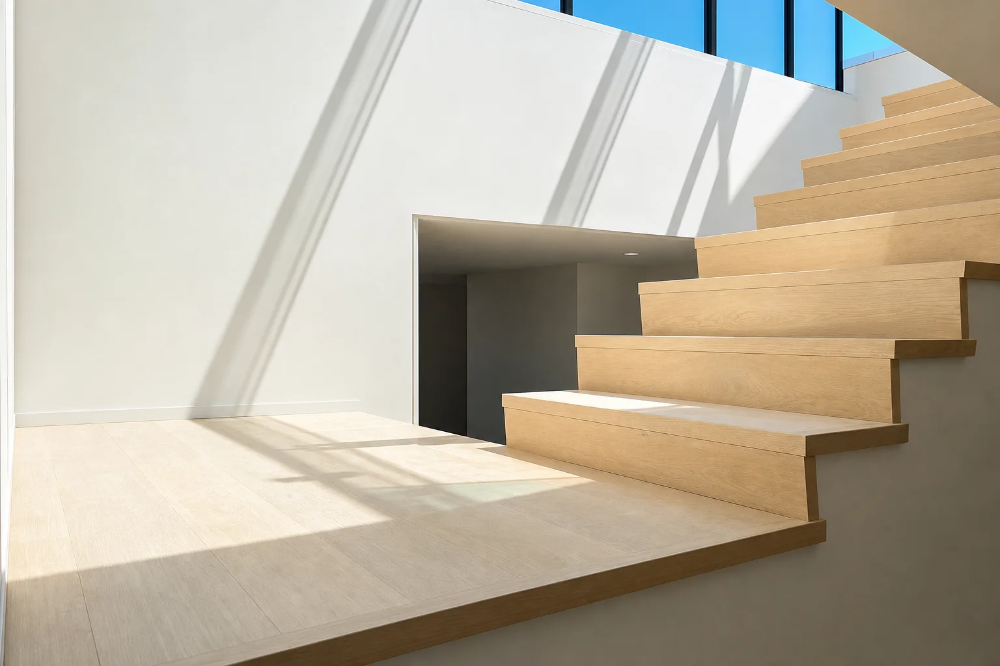

baseboards and floor-finish trim
Baseboards & Floor-Finish Trim Penticton
Flooring is still the focus. Baseboards, casing, shoe moulding, quarter-round, and selective trim/millwork details make the finished floor look intentional instead of simply installed.
Pricing: Baseboards from $2.00/linear ft; selective floor-finish trim/millwork quoted by scope.
Request a quote
Problems this solves
- Floors that look unfinished because baseboards, casing, returns, or floor-finish trim details were treated as an afterthought.
- Doorways, returns, casing, stair edges, and wall lines that need clean floor-focused finish details.
- A flooring project that needs baseboards or floor-finish trim details to match the quality of the install.
- Selective trim/millwork details where they support the flooring result, not a broad cabinet-shop scope.
Process
- Review photos, measurements, material, and timeline.
- Check flooring edges, wall conditions, casing, returns, transitions, and floor-finish trim scope.
- Quote labour clearly before work starts.
- Install after the flooring sequence is clear so baseboards and trim details finish the room cleanly.
Send photos for a faster estimate.
Text room photos, approximate linear footage, finish details, city, and timeline for a faster estimate.
Reveal verified contact details
Quick spam check to protect contact info from robocrawlers.
Phone and email appear automatically after verification.